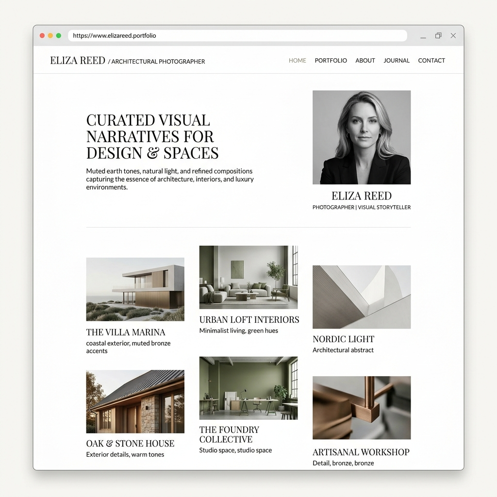
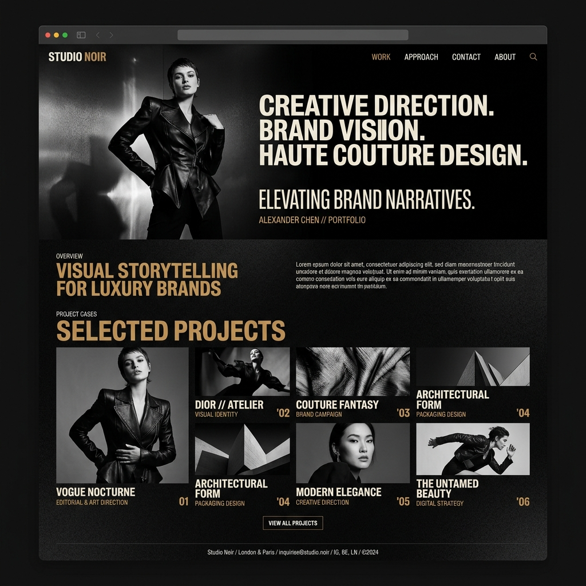
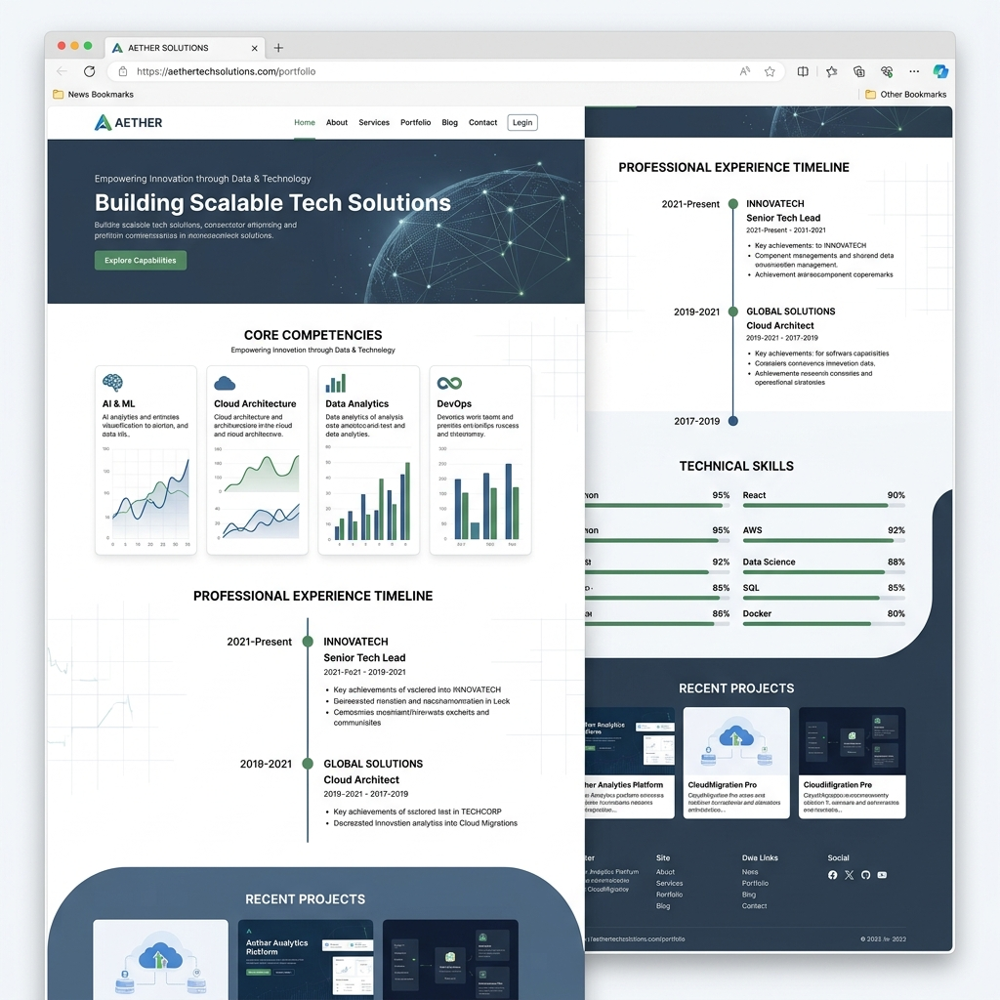
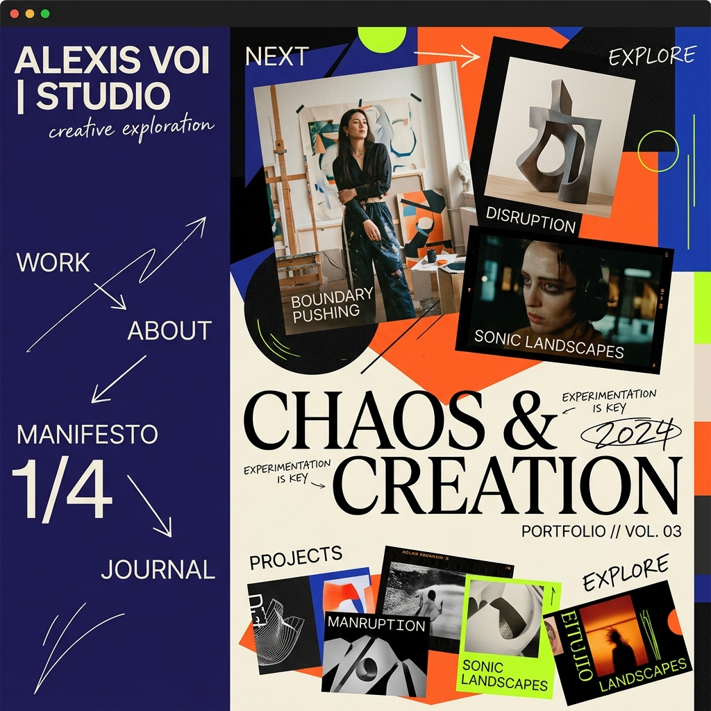

Templates that
tell your story.
Every layout is art-directed by our design team and optimized by AI to showcase your unique professional journey.

Minimalist
A layout that breathes. Generous whitespace meets refined serif typography to let your work command the stage. Ideal for writers, consultants, and brand strategists who value clarity over clutter.

Creative Director
Maximum impact, zero apologies. Full-bleed photography meets dramatic typography for portfolios that demand attention. Built for photographers, art directors, and visual storytellers.

Corporate Tech
Precision meets polish. Structured grids, clean data visualization, and an organized timeline layout designed for engineers, product managers, and tech professionals.

Experimental
Break all the rules. Unconventional navigation, bold color clashes, and boundary-pushing layouts for artists, musicians, and creative rebels who refuse to blend in.
Compare Templates
Every template ships with Cedar's core features. See what makes each one unique.
| Feature | Minimalist | Creative Director | Corporate Tech | Experimental |
|---|---|---|---|---|
| Responsive Design | check_circle | check_circle | check_circle | check_circle |
| Dark Mode | check_circle | Default | check_circle | check_circle |
| Parallax Animations | remove | check_circle | remove | check_circle |
| Case Study Module | remove | check_circle | check_circle | remove |
| Data Visualizations | remove | remove | check_circle | remove |
| Video Background | remove | check_circle | remove | check_circle |
| Custom Color Engine | remove | remove | remove | check_circle |
| Best For | Writers & Consultants | Photographers & Art Directors | Engineers & PMs | Artists & Musicians |
Your portfolio is
one upload away.
Upload your CV and our AI will auto-generate a stunning portfolio using your chosen template. No design skills needed.